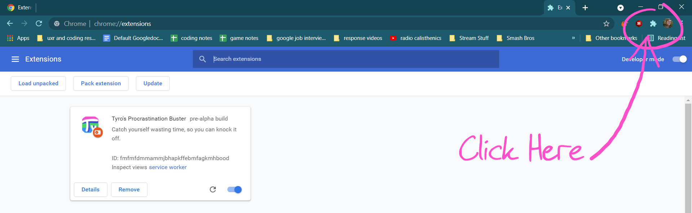
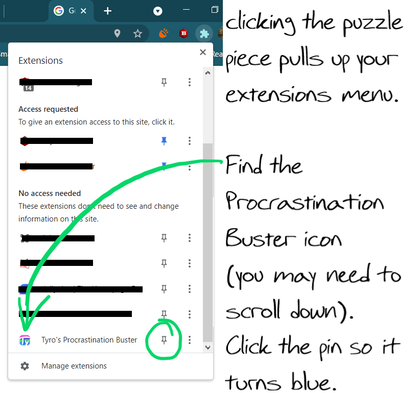
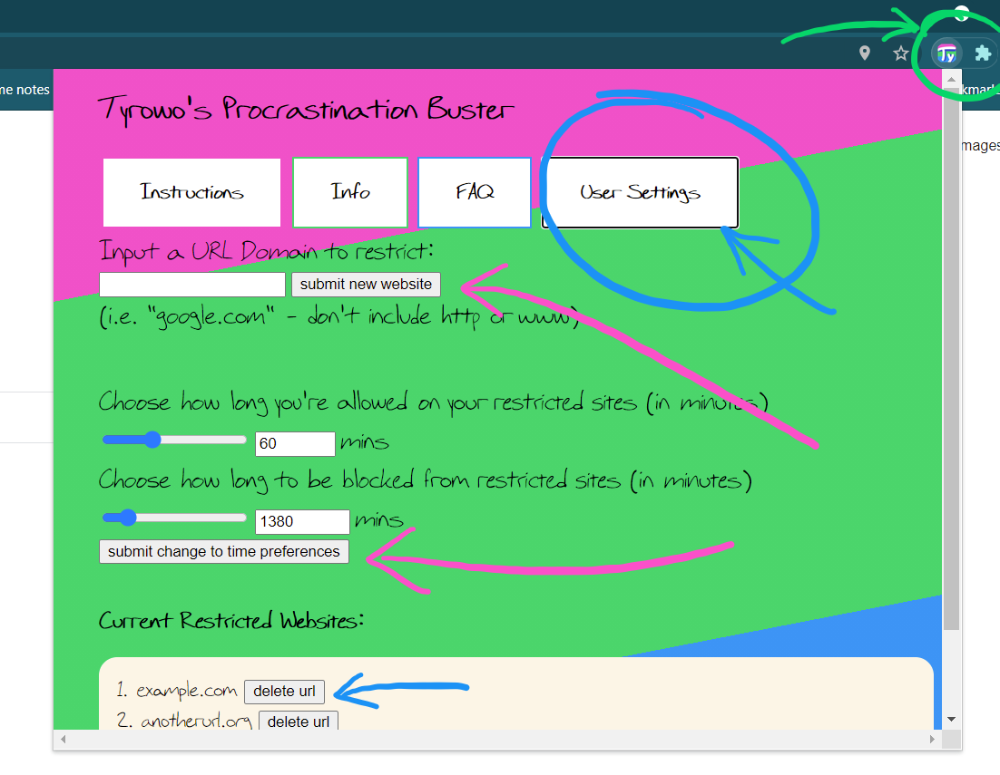

Thanks for downloading my extension, The Procrastination Buster!
With the extension installed, the first thing that you'll want to do is pin the extension to your toolbar.
If you're an older Chrome user, you may have noticed that extensions no longer pop up in the toolbar
automatically on installation.
This is due to a chrome update that does not allow extensions to pin themselves anymore. Instead they are
all hidden in the puzzle piece icon to the right of the omnibar.


When you click the puzzle piece icon find The Procrastination Buster, and click the pin symbol so that it is
filled in blue.
Although the extension will work whether it is pinned or not, if it is in your bar it will display whether
or not it is actively blocking
your restricted websites. You can also click the icon to view this page and change your settings.
With the extension pinned, it's time to choose your settings.
(Once you read through these instructions) click the black "User Settings" button on the top right of this
page.
At the top is a bar where you can input up to 10 different websites to restrict.
For the extension to work best, input your website's domain and top-level domain into the bar and hit
"submit new
website."
This means instead of putting "http://www.google.com", just put "google.com". Only put in the main part of
your url and its .com, .org, etc tag.

When you successfully input a new website you'll get a notification, and it should appear in the box at the
bottom of the page.
With the slider or the numerical input box, choose two timer settings:
First, how much time you'll be allowed on your restricted websites before you're kicked off.
The allowed time is anywhere from 1 minute to 180 minutes (3 hours)
Then, pick how long you want to be blocked from your websites before being allowed back on.
This can be anywhere from 15 minutes to 10080 minutes (1 week).
For example, if you set your timer settings to the default setting of 60 minutes and 1380 minutes (23
hours),
then every time you access one of your restricted sites you'll be allowed to view them for 1 hour before
being
kicked off until the next day (a total of 24 hours after you first visited a restricted website).
Play around with it! Only you can know what the appropriate amount of internet use is for you.
Note: if you don't submit your own settings, the extension will default to 1 hr and 23 hrs.
Finally, in the section at the bottom of the page is a list of your currently restricted websites.
You can always click back to this user settings page to see what you have restricted. If you've made a
mistake entering a website's domain, or you no longer want to have it restricted, you can click the "delete
url" button next to any of your sites to remove it.
It's as simple as that! Now scroll back up and click the "User Settings" button to try it out.
Thanks for using my extension!
Have you ever felt like you just need to be kept honest with your internet use?
That you could accomplish so much more, if you just stayed off your habit websites?
That you just mindlessly key into a new tab, hit the same url, and doomscroll through the same front
page
9001
times a day?
Habituated internet usage is an addiction to the dopamine high from pushing a happy button over and over
every
day, every hour, every minute.
And anyone knows that trying to quit a behavior cold turkey begs most people to fail.
If your habits are anything like mine were, The Procrastination Buster can be your baby step towards
rehabilitation. It acts as a tool to wean off your problem sites, where you can restrict access for a period
of time that you choose, with the flexibility to choose the amount of time you think it's appropriate to
spend on them.
The Procrastination Buster is not parental advisory software.
This is a product for people who want help in policing their own behavior, not in policing others'.
You can name up to 10 websites to restrict your usage.
You choose the amount of time you want to be allowed on your problem websites,
and you choose the amount of time you Don't want to be allowed on the sites.
It's as simple as that.
I built this extension for myself because I just got sick of spending so much extra time in my day on
reddit.
In the past I've allowed my internet usage habits to get the better of me. My habits would often get in the
way of my productivity completing daily tasks, and especially when pursuing academics.
Now that I'm learning how to code and trying to shift careers, I wanted to build this product as a test
of my skills, with the added benefit of curbing my internet habits and honing my focus.
I'm determined to make changes and be more successful in the future.
In building this product I've been able to help myself. If it's able to help you too, I'm overjoyed.
Good luck to you in your future endeavors!
-Tyler
First, check that you have any websites restricted on the extension. Click the "User Settings" button above,
and your restricted websites should be listed.
If you' re not seeing notifications when registering or unregistering websites to your extension, or when
visiting your restricted websites you should check your notification settings on your windows device for
chrome.
for windows this is in settings -> system -> notifications and actions.
On that page make sure that you have "get notifications from apps" turned on and notifications for
chrome
turned
on.
If you haven't registered any websites to your extension try doing that
first.
You should also check your User Settings and make sure that the currently restricted urls are all spelled
correctly,
and that you've only entered the website's domain instead of the full link.
If there's an issue with the url listed, delete the current one and input the correct domain at the top of
the page.
If you've checked that and your website is correctly listed in the user settings, there is the possibility
that your extension has become inactive for some reason,
so to check that try restarting the extension by going to chrome://extensions in your chrome browser,
finding the Procrastination Buster in your list of extensions, and clicking the slider to turn it off
and
turn
it on again.
Chrome recently updated their extensions hiding all newly installed
extensions in the puzzle piece icon
to
the
right of the omnibar.
If you click the puzzle piece it should bring up a list of all of your enabled extensions.
Find the Procrastination Buster icon and click the pin next to it so that it is highlighted blue.
Unfortunately this was a feature planned during development, to have the
'active' badge on the extension icon display how much time was remaining before you could access your site.
The feature was too consumptive on memory and demanding of the browser, so this feature was foregone, and
you can only see whether or not your restricted sites are being
actively blocked.
In order to see this feature make sure you have the extension pinned to your taskbar.
Well, that's what you get for cheating yourself!
Just kidding lol
This error was encountered during testing and a fix was implemented into the installation code.
All you have to do is reinstall the Procrastination Buster extension, which will clear all of your
actively
blocked urls.
Once you've reinstalled, uninstall the extension before navigating to any of your restricted websites.
You should be able to browse regularly.
Yes!!
This is my first real coding project, and I built it primarily by reading through chrome extension and
Mozilla Javascript documentation.
If you'd like, you can take a look at the github repository here.
The font is actually my handwriting, which I turned it into a font at calligraphr.com
However, I do have some people to thank. Working on your own is hard, and I definitely needed the
consultation of some forums and friends.
So I'd like to thank my good friends Weilin Zou and Evan Broscious for answering as many of my questions
as
they
could, and helping me to become a better coder.
I'd also like to thank
stackoverflow.com for providing answers on some topics that I
struggled to figure out,
and I'd like to thank users wOxxOm, Jackie Han, hrg..., salem..., Simeon Vincent, Erek Speed, and
avm99963
who took the time to answer my questions on the Chromium
forums.
Couldn't have done it without you all.
You have no restricted websites yet.